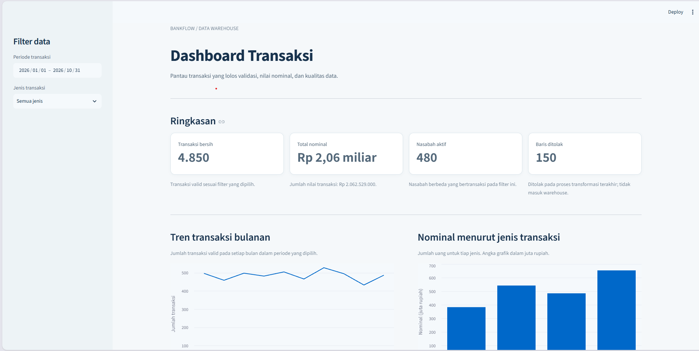
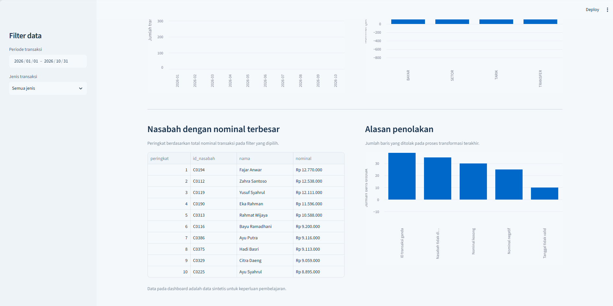
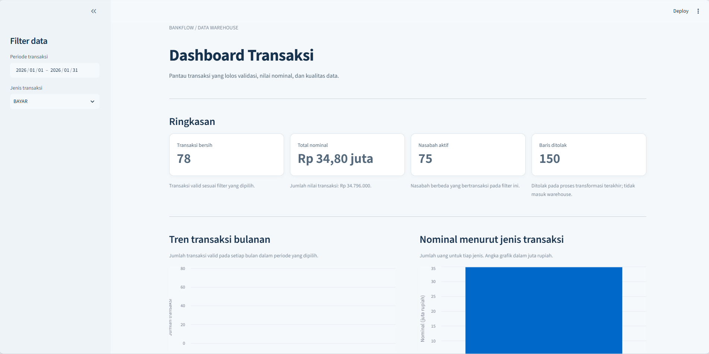
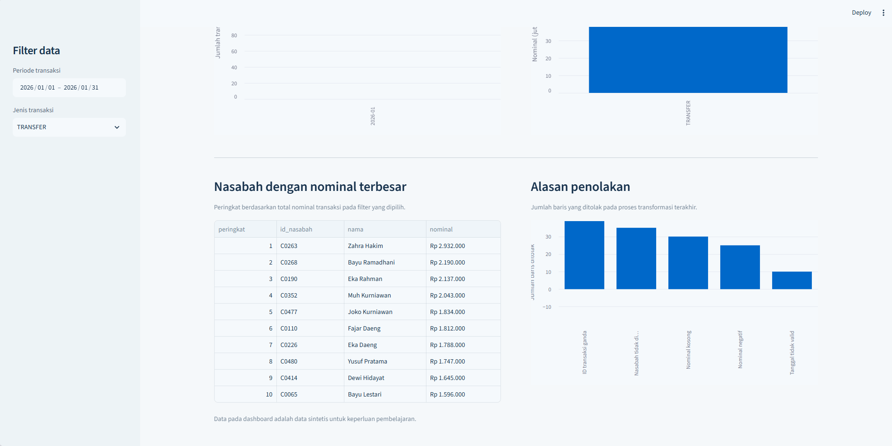

BankFlow adalah pipeline ETL untuk mengubah data transaksi sintetis yang berantakan menjadi data warehouse berbentuk star schema. Pipeline memproses 5.000 baris, memuat 4.850 transaksi valid, dan mencatat 150 baris yang ditolak beserta alasannya. Rekonsiliasi jumlah dan nominal menghasilkan selisih nol, sementara lima tes otomatis lulus.
Proyek ini dibuat untuk pembelajaran dan menggunakan data sintetis, bukan data nasabah atau transaksi bank sungguhan.
File transaksi mentah sering memiliki format tanggal berbeda, ID berulang, nilai kosong, dan referensi nasabah yang tidak dikenal. Jika langsung dimasukkan ke sistem analitik, masalah tersebut dapat menghasilkan hitungan yang keliru atau membuat proses pemuatan gagal. BankFlow menunjukkan alur untuk menjaga data mentah, memeriksa kualitasnya, dan menjelaskan setiap baris yang tidak dimuat.
Data sumber bercampur format dan memiliki beberapa jenis masalah kualitas. Tanpa proses yang teratur, transaksi duplikat dapat dihitung ganda, tanggal sulit dibaca konsisten, dan baris tidak valid tidak memiliki jejak alasan penolakan.
Membangun pipeline extract, transform, load, dan reconcile. Data mentah disimpan di staging, aturan validasi memisahkan transaksi bersih dari baris yang ditolak, lalu transaksi valid dimuat ke star schema dan diperiksa kembali melalui rekonsiliasi.
ROW_NUMBER(), serta mencatat baris yang ditolak di tabel audit.ON CONFLICT (transaction_id) DO NOTHING agar transaksi yang sama tidak dimuat berulang.run_id, memeriksa rekonsiliasi, dan menguji integritas dengan pytest.DUPLICATE_ID transaksi dengan ID yang muncul lebih dari sekali.NULL_AMOUNT transaksi tanpa nominal.NEGATIVE_AMOUNT transaksi dengan nominal negatif.UNKNOWN_CUSTOMER transaksi dengan ID nasabah yang tidak ada di master.BAD_DATE transaksi dengan tanggal yang tidak valid.Menangani tanggal ISO, format hari/bulan/tahun, dan nama bulan Indonesia sambil memastikan format dd/mm/yyyy dibaca sebagai hari terlebih dahulu.
Memisahkan data valid dari lima kategori masalah dan menyimpan payload mentah agar alasan penolakan tetap dapat ditelusuri.
Membuktikan bahwa jumlah serta nominal sumber sama dengan data yang dimuat ditambah data yang ditolak, termasuk saat pipeline dijalankan ulang.
Contoh tampilan dashboard BankFlow dengan pilihan filter yang berbeda.


